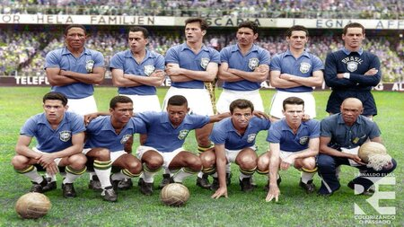
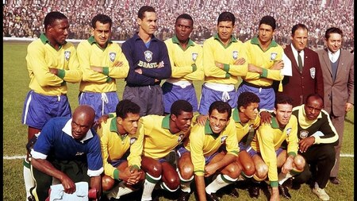
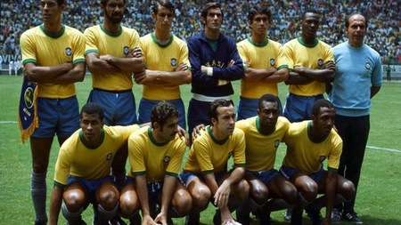
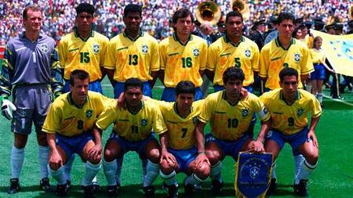
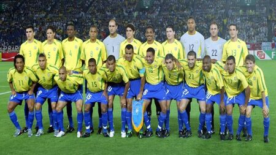

Time de 1958
Gilmar; Djalma Santos, Bellini, Orlando e Nilton Santos; Zito e Didi; Garrincha, Pelé, Vavá e Zagallo.
Time de 1962
Gylmar; Djalma Santos, Mauro, Zózimo e Nilton Santos; Zito e Didi; Garrincha, Amarildo, Vavá e Zagallo.
Time de 1970
Félix; Carlos Alberto Torres, Brito, Piazza e Everaldo; Clodoaldo e Gérson; Rivellino, Jairzinho, Tostão e Pelé.
Time de 1994
Taffarel; Jorginho, Aldair, Márcio Santos e Branco; Mauro Silva, Dunga, Mazinho e Zinho ; Bebeto e Romário.
Time de 2002
Marcos; Cafu, Lúcio, Roque Junior e Roberto Carlos; Edmilson, Gilberto Silva, Kleberson e Rivaldo; Ronaldinho Gaúcho e Ronaldo .